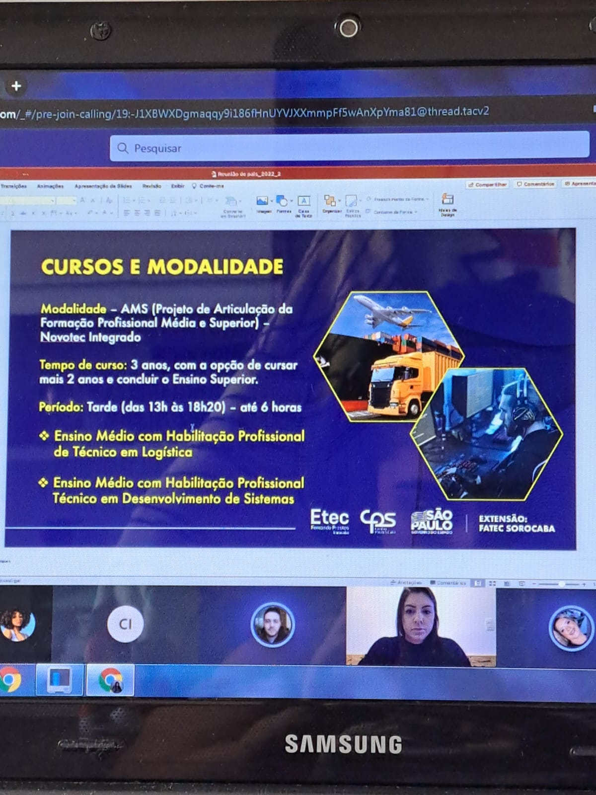
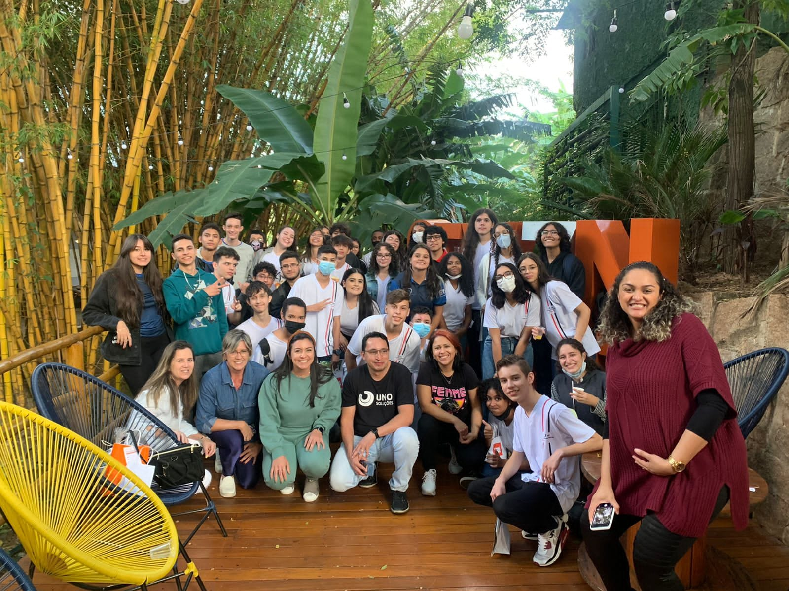
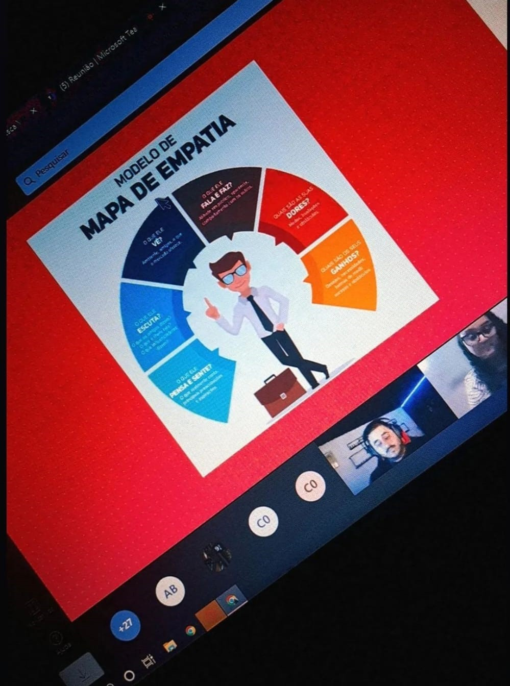
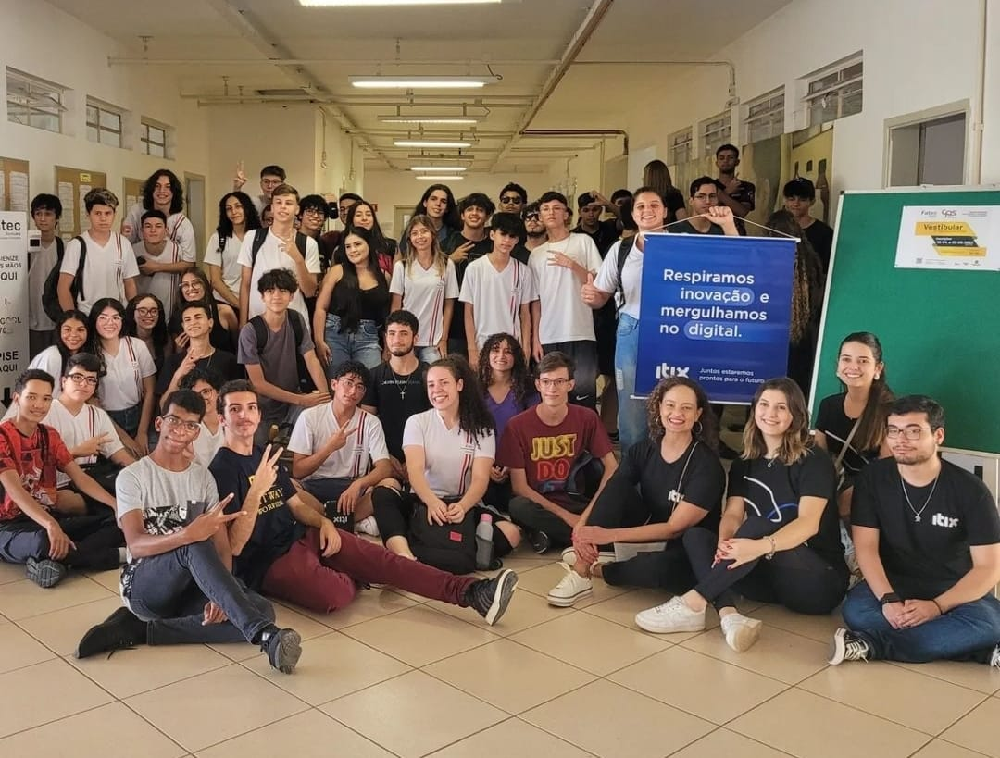
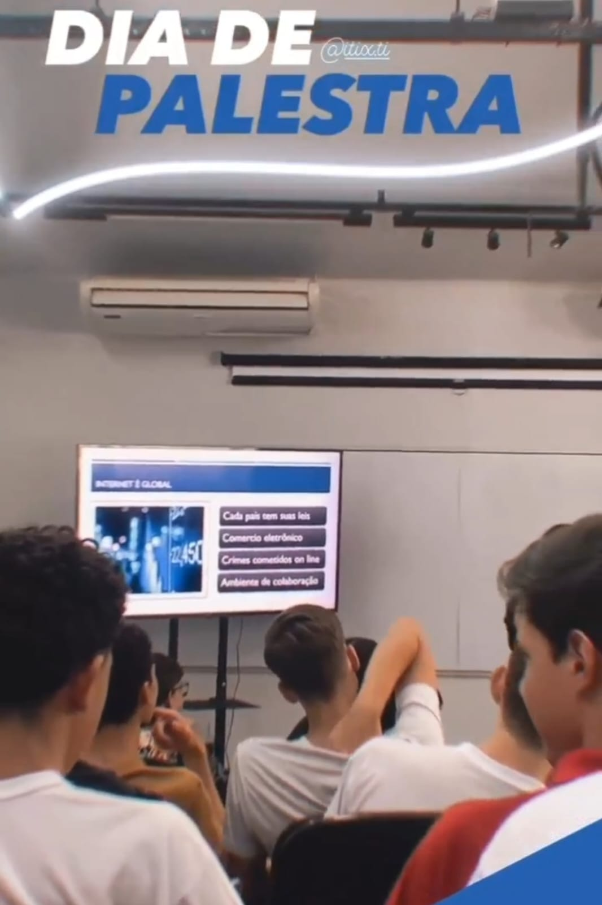
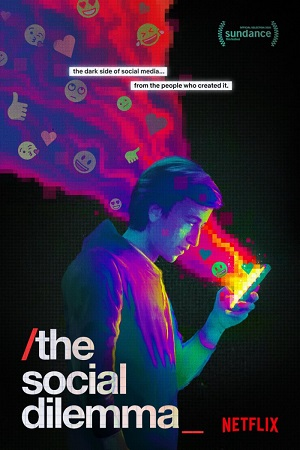
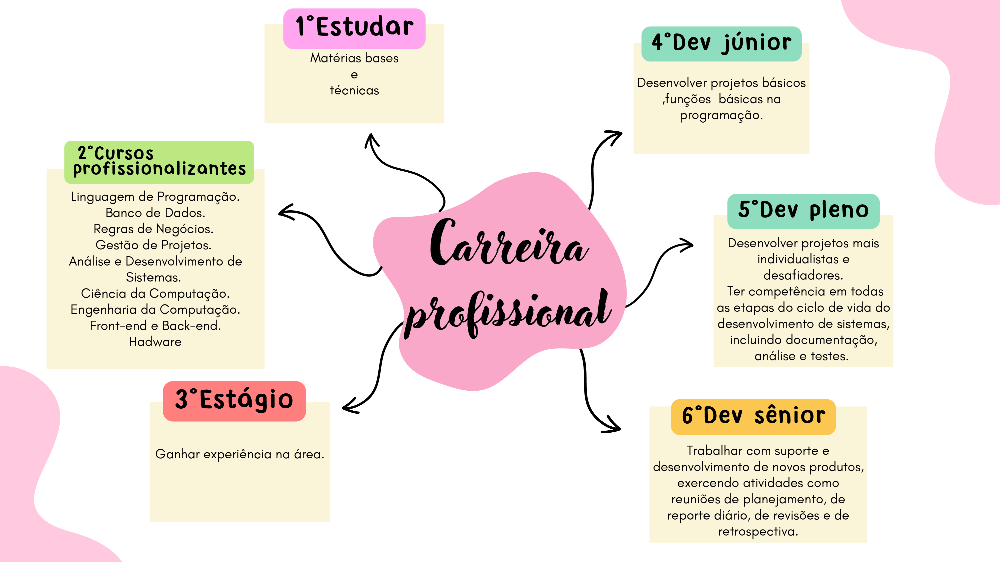
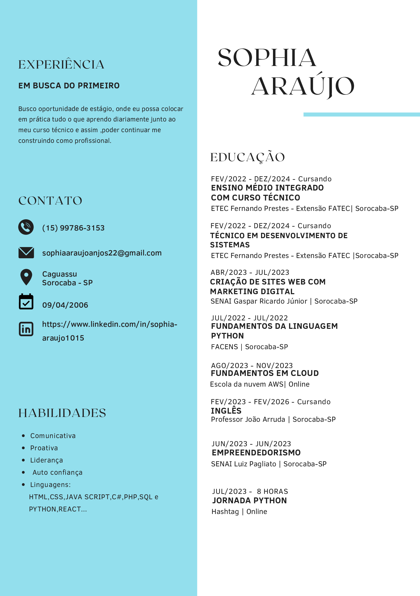
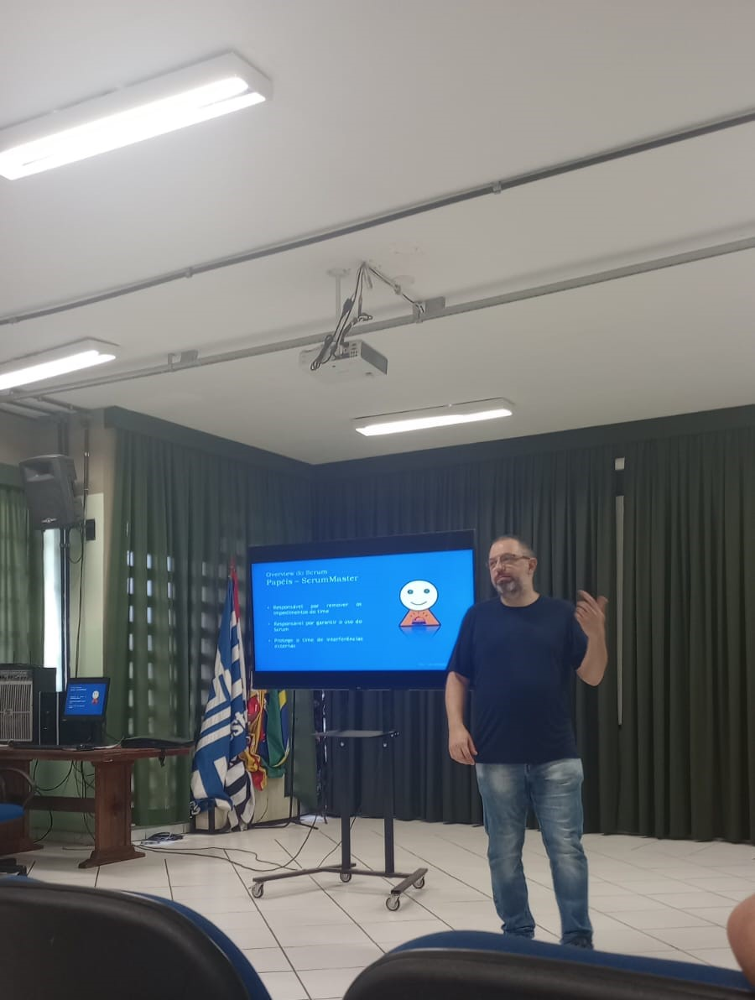

Apresentou-se as empresas parceiras e aprendemos como a contextualização profissional em tecnologia significa entender o contexto amplo do trabalho, incluindo mercado, usuários e tendências. Adaptar habilidades técnicas para criar soluções relevantes é essencial para o sucesso na carreira de tecnologia.

Nessa reunião sobre ética e valores, aprendi que são fundamentais em todas as áreas da vida, incluindo o trabalho. Manter integridade, respeito e responsabilidade são essenciais para o sucesso profissional e construção de relações confiáveis.

Conhecemos o ambiente de trabalho Eduzz e sua proposta como empresa,houve dinâmicas ,palestras e debates.

No encontro sobre Comunicação Interpessoal, aprendi que expressar-se e ouvir ativamente são fundamentais para construir relacionamentos sólidos e colaborativos.
Apresentação da empresa ONU

Aqui aprendemos sobre a importância da determinação, criatividade e habilidades empreendedoras para construir uma empresa própria.

Na interseção entre inteligência artificial, redes sociais e ética, abordarão sobre a importância de regulamentações éticas para garantir privacidade, segurança e equidade, minimizando consequências negativas como viés algorítmico e disseminação de desinformação.

Com "O Dilema das Redes", aprendi sobre os impactos negativos das mídias sociais, como manipulação de comportamento, polarização e preocupações com privacidade. O documentário destaca a necessidade de uma reflexão crítica sobre nosso uso dessas plataformas.

- Especifique : etapas você deseja chegar em sua carreira profissional. objetivos pretende desenvolver percorrer metas deseja atingir.
Referente: referente ao dia 04/05/23 - boas-vindas Itix com apresentação da trajetória profissional Carlos Santo
Na palestra com a consultora de RH sobre currículos, aprendi a destacar habilidades, experiências e conquistas de forma clara e adaptada para cada vaga. Entendi a importância de incluir palavras-chave relevantes para melhorar a visibilidade do currículo.

Criação dos nossos currículos

Aqui aprendemos sobre sobre uma abordagem ágil para gerenciamento de projetos, enfatizando colaboração, flexibilidade e entrega incremental em ciclos curtos de trabalho chamados "sprints".